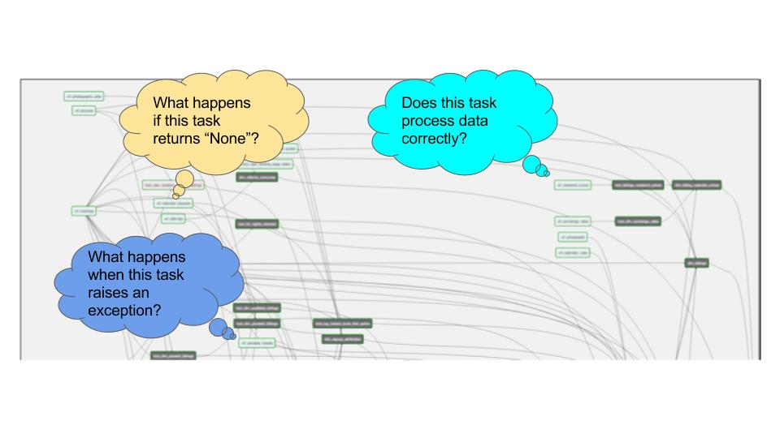

Building your own ETL platform¶
By now you’ve discovered that airflow is great as a programmable platform with a powerful scheduler in the middle that decides when your tasks run. Let’s dive a bit deeper into the architecture of airflow to be able to understand the consequences of extending the platform for new capabilities and how to most effectively use them.
Understanding the airflow platform design¶
When airflow runs tasks, they do not run in the same thread as the scheduler, but an entirely new python interpreter gets started that is given some parameters to load the DAG of interest and then another parameter to indicate the task of interest, along with some other parameters that belong to that task.
This new python interpreter could run on the same machine as the scheduler, but it might as well run on a totally different worker machine. If you follow through the examples, you’ll also have noticed that the distribution of airflow across all those machines is 100% the same. The scheduler machine does not run different software from the webserver or any of the workers; you’d typically deploy the full airflow software distribution to any type of these machines, which can be good and bad, it certainly has the potential to simplify the setup. The only thing that determines the role that each process plays in the grand scale of things is the command that you use on each machine to start airflow with; airflow scheduler, airflow webserver or airflow worker. The workers are not started by users, but you allocate machines to a cluster through celery.
Important
The webserver, scheduler and worker all run exactly the same software, but are started with different commands.
This is a depiction of how a data platform stack would look like using Apache Airflow:

It shows who’s typically responsible for the different parts of the data platform and gives an intuition as to what kind of tests and control have to implemented to make the data platform sustainable and controlled.
It is important to understand how these components map to your organization. There are cases where “anyone” could refer to business analysts, data engineers, data scientists and developers from other teams in your organization, or it could refer to only a number of data scientists that work with a constrained set of data in a very specific setting with high access controls because it involves financial data.
Airflow runs on an operating system of a specific distribution that has pre-installs of particular libraries and other daemons that are defined by your organization. From there, the airflow package could be installed from either source or from the pip package. Although airflow contains a number of standard components, mostly the hooks and operators, you’ll probably want to write or extend them yourself, because organizations typically do certain things differently.
Software is about abstractions and what the operators allow you to do is abstract and generalize on how you want to “do things with data” in your organization. For example, one rule could be that all data that you ingest from external sources (FTP, API, SOAP, etc.) get archived on the cloud in some specific and general way. You could enforce this as a rule when people build their workflows, but this would require someone to “police” that all workflow DAGs being constructed utilize that method and you’d have to spend time and effort to ensure that people get educated and trained on how that’s done as part of a workflow. Some of those choices can be generalized within an operator, so that it becomes transparent for people writing DAGs and workflows, another way to look at that is that you can update your data policies in a much easier way without a lot of rework, so you become more flexible.
Understanding hooks and operators¶
Hooks and operators are the key to understanding how airflow can be extended with new capabilities and to keep your DAGs clean and simple. A DAG should be readable in the sense that it’s a description of workflow. Whatever the underlying technical or business principles are that you must follow, reading through a DAG should be like reading through a reading a business workflow document, describing what a particular business process is trying to achieve.
A hook is an object that embodies a connection to a remote server, service or platform.
An operator is an object that embodies an operation utilizing one or more hooks, typically to transfer data between one hook and the other or to send or receive data from that hook from/into the airflow platform, for example to _sense_ the state of that remote.
As an example, when you see MySqlOperator, it typically identifies an operator that executes some action on a single hook that interfaces with, in this case, a MySQL database.
When you see MySqlToMySqlOperator, it typically identifies an operator that interfaces two systems together, through the airflow worker, and transfers data between them.
The default supplied operators in airflow are relatively simple. They embody some basic actions like data transfer.
Do not take these operators as the prescribed way of doing things that absolutely has to be followed in order to be successful. Some users have used the operators as the basis for their own platform framework, but significantly enriched the behavior. One such example is a company using airflow, which archives every data entity ingested from external sources onto some storage solution, according to a pre-defined URL scheme. The standard operators and hooks implement and abstract this specific behavior, so the DAGs do not get polluted by any of this additional processing. In a similar way you could add metric collection to operators or leave that in your DAGs, those are design choices.
Publish documentation¶
After you finish building airflow, it’s a good idea to build your own documentation site. The airflow site and this site are built using sphinx, which works great for python projects. You can document a part about your specific use of airflow, agreements and principles that you set up and include the documentation for each operator and hook that you develop as part of the platform. Release that documentation site as part of your continuous integration pipeline and the documentation, explaining how to use operators and what they do will always be up to date.
Strategies for testing the platform¶
A good understanding of the entire stack also gives you insight as to where “testing” needs to happen. First, you want to ensure that the infrastructure and things at OS level are stable and working. You need to understand the quirks of the Apache Airflow core, the bugs it has, which areas and functionalities are best avoided for now, what are the choices you make with regards to authentication, etc.
Once you understand the core platform, you move into the area of making sure that workflows don’t break because of code issues. So operators and hooks that are built need to be predictable with regards to their behavior and you’ll want to spend a good amount of time making sure that corner cases are handled correctly. The “happy path” for operators is quite easy to define, but what you need to really spend some time on is how potential failures with hooks, operator code, exceptions and data issues would impact the behavior of that operator. I.e., cases like:
- If data from this API comes back as empty, what’s the behavior of this operator and down-stream from there?
- If the data returned is corrupted (a half-written file), does this operator fail on that?
- If the external API cannot be contacted or times out, how does the operator react to that? Does it return an empty record or does it fail with an exception?
- Are there cases in which I want to have workflow designers be able to influence these exceptional conditions by ignoring them?
From the level of the workflow/DAG, you can start asking questions like this:
Operators are great at implementing general policy and behavior, but they cannot inform a data engineer when bad data is being processed, because it doesn’t have that contextual information. Very often, data pipelines are built where the developer dumps the data in a temporary table when the pipeline gets constructed and when the data outcome is as expected, the pipeline gets productionized without implementing a continuous data quality check.
This leads to situations where you cannot make statements about the final quality of data. By chance, some analyst looking at the margins or sold quantities from yesterday might see some anomalies, after which an alert is raised and an investigation is started as to how the data got that way. The only real way to deal with that is to integrate data quality checks into each and every run of a DAG which confirms that the results are as expected. Every time an anomaly is observed, it’s important to keep extending the DAG to trap such cases at the time when the potential corruption is about to happen, so as early as possible. When a table is half transferred, you don’t want to raise an alert that the calculated margin is wrong, but you raise this at the time it is observed that that table is only half there and block downstream processes from further processing.
So, it is important to ask questions when and where tests are happening, what you rely on and assume and what the scope of those tests are. We had a discussion on the dev mailing list about testing strategies for airflow and this discussion is ongoing at the moment.
So far, my view on that is the following:
- At the lowest level, the OS + libs, use tools like chef/puppet to ensure a stable installation. (those tools “test” the environment against what you declared it to be and make adjustments where necessary)
- Pin the version of airflow you want to use for a specific environment and make sure you have ways to do major upgrades. One way there is to have a complete “UAT” environment where you can run all workflows from production.
- Set up a separate project that extends the airflow core (your operators and hooks for your organization) and make sure that those operators are fully unit-tested in terms of how they react to empty datasets, connection failures and other generic faults.
- The workflows themselves are tested in UAT; here it’s only considering that the workflow runs as expected and completes successfully.
- Each workflow DAG contains data quality checks: “Is data complete?”, “After this operation, is the margin within x % of previous days?”